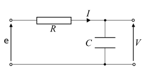
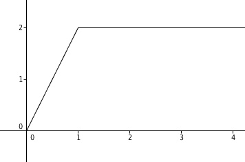
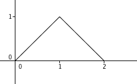

Exercices corrigés - Transformée de Laplace
Plutôt pour master Enseignement
Enoncé 
Déterminer l'abscisse de convergence de la transformée de Laplace des fonction suivantes :
$$\begin{array}{lll}
\mathbf 1.\ e^{2t}\cos(\omega t),\ \omega\in\mathbb R&\quad&\mathbf 2.\ t^ne^{-3t},\ n\geq 0\\
\mathbf 3.\ \cosh(at),\ a\in\mathbb R
\end{array}
$$

Exercice 2 - A partir de la fonction échelon-unité ♡ [Signaler une erreur] [Ajouter à ma feuille d'exos]
Enoncé
Tracer le graphe et calculer la transformée de Laplace des fonctions suivantes :
$$\begin{array}{lll}
\mathbf 1.\ \mathcal U(t-1)-\mathcal U(t-2)&\quad&\mathbf 2. \mathcal U(t-2)(t-2)^2\\
\mathbf 3.\ \sum_{n=0}^{+\infty}\big(\mathcal U(t-2n)-\mathcal U(t-(2n+1))\big).
\end{array}
$$
Enoncé
Déterminer la transformée de Laplace des fonctions suivantes :
$$
\begin{array}{lll}
\mathbf 1.\ (2t^2-1)\mathcal U(t)&\quad&\mathbf 2.\ \left(e^t-\cos\left(\frac 23t\right)e^{2t}\right)\mathcal U(t)\\
\mathbf 3.\ te^{4t}\mathcal U(t)&\quad&\mathbf 4.\ \cos^3(t)e^t\mathcal U(t).
\end{array}
$$
Exercice 4 - Application de la formule de dérivation ♡ [Signaler une erreur] [Ajouter à ma feuille d'exos]
Enoncé
On pose
$$f(t)=(1-\cos t)\mathcal U(t),\ g(t)=e^{-t}f(t).$$
- Montrer que $\mathcal L(f)(p)=\frac{1}{p(p^2+1)}$.
- En déduire que $$\mathcal L\left(e^t g''\right)(p)=\frac{(p-1)^2}{p(p^2+1)}.$$
Enoncé
Retrouver l'original des transformées de Laplace suivantes :
$$\begin{array}{lll}
\mathbf 1.\ \frac1{(p+1)(p-2)}&\quad&\mathbf 2.\ \frac{-1}{(p-2)^2}\\
\mathbf 3.\ \frac{5p+10}{p^2+3p-4}&\quad&\mathbf 4.\ \frac{p-7}{p^2-14p+50}\\
\mathbf 5.\ \frac{p}{p^2-6p+13}&\quad&\mathbf 6.\ \frac{e^{-2p}}{p+3}
\end{array}$$
Exercice 6 - Équations différentielles et transformée de Laplace ♡ [Signaler une erreur] [Ajouter à ma feuille d'exos]
Enoncé
On se propose d'utiliser la transformée de Laplace pour résoudre des équations différentielles.
- On considère l'équation différentielle $$y'+y=e^t\mathcal U(t),\ y(0)=1.$$ Soit $y$ une fonction causale solution de l'équation dont on suppose qu'elle admet une transformée de Laplace $F$. Démontrer que $F$ satisfait l'équation $$F(p)=\frac{p}{(p-1)(p+1)}.$$ En déduire $y$.
- Sur le même modèle, résoudre l'équation différentielle $$y''-3y'+2y=e^{3t}\mathcal U(t),\ y(0)=1,\ y'(0)=0.$$
- Sur le même modèle, résoudre le système différentiel $$\left\{ \begin{array}{rcl} x'&=&-x+y+\mathcal U(t)e^t,\ x(0)=1\\ y'&=&x-y+\mathcal U(t)e^t,\ y(0)=1. \end{array} \right.$$
Enoncé

Dans un circuit comprenant en série un condensateur de capacité $C$ et une résistance $R$, la tension $v$ aux bornes du condensateur est donnée par
$$RC v'(t)+v(t)=e(t)$$
où $e(t)$ est la tension d'excitation aux bornes du circuit. Supposons que $v(0)=0$. Notons $V=\mathcal L(v)$ et $E=\mathcal L(e)$.
- Établir la relation entre $V$ et $E$ sous forme $V(p)=T(p)E(p)$ avec une fonction $T$ que l'on déterminera. La fonction $T$ est appelée fonction de transfert.
- En déduire la réponse du système, c'est-à-dire la tension $v(t)$, aux excitations suivantes :
- un échelon de tension, $e(t)=\mathcal U(t)$;
- un créneau $e(t)=H(t)-H(t-t_0)$.
Plutôt pour BTS
Enoncé
Tracer le graphe et calculer la transformée de Laplace des fonctions suivantes :
$$\begin{array}{lll}
\mathbf 1.\ \mathcal U(t-1)-\mathcal U(t-2)&\quad&\mathbf 2. \mathcal U(t-2)(t-2)^2\\
\end{array}
$$
Enoncé
Déterminer la transformée de Laplace des fonctions suivantes :
$$
\begin{array}{lll}
\mathbf 1.\ (2t^2-1)\mathcal U(t)&\quad&\mathbf 2.\ \left(e^t-\cos\left(\frac 23t\right)e^{2t}\right)\mathcal U(t)\\
\mathbf 3.\ te^{4t}\mathcal U(t)
\end{array}
$$
Enoncé
On pose
$$f(t)=(1-\cos t)\mathcal U(t),\ g(t)=e^{-t}f(t).$$
- Montrer que $\mathcal L(f)(p)=\frac{1}{p(p^2+1)}$.
- Calculer, pour $t>0$, $g'(t)$. Que valent $\lim_{x\to 0^+}g(x)$ et $\lim_{x\to 0^+}g'(x)$?
- En déduire que $$\mathcal L\left(e^t g''\right)(p)=\frac{(p-1)^2}{p(p^2+1)}.$$
Enoncé
- Soit $a>0$. Déterminer la transformée de Laplace de $t\mapsto t\mathcal U(t-a)$.
- On considère le signal suivant :
Calculer, à partir de la définition, sa transformée de Laplace.
- Décomposer le signal en une combinaison linéaire de signaux élémentaires. Retrouver alors le résultat en utilisant le formulaire.
Enoncé
On considère la fonction causale $f$ dont le graphe est donné par la représentation graphique suivante :

- Déterminer l'expression de $f$ sur les intervalles $[0,1]$, $[1,2]$ et $[2,+\infty[$.
- Démontrer que $$f(t)=t\mathcal U(t)-2(t-1)\mathcal U(t-1)+(t-2)\mathcal U(t-2).$$
- En déduire la transformée de Laplace de $f$.
Enoncé
Retrouver l'originale des transformée de Laplace suivantes :
- $\displaystyle \frac1{(p+1)(p-2)}$. On pourra chercher $a,b$ tels que $$\frac{1}{(p+1)(p-2)}=\frac a{p+1}+\frac b{p-2}.$$
- $\displaystyle \frac{e^{-2p}}{p+3}$.
- $\displaystyle \frac{5p+10}{p^2+3p-4}$. On pourra chercher $a$ et $b$ tels que $$\frac{5p+10}{p^2+3p-4}=\frac a{p+4}+\frac b{p-1}.$$
- $\displaystyle \frac{p-7}{(p-7)^2+1}$.
- $\displaystyle \frac{p}{p^2-6p+13}$. On pourra remarque que $p^2-6p+13=(p-3)^2+4$.
Enoncé
- Déterminer $a$ et $b$ de sorte que $$\frac{p}{(p-1)(p+1)}=\frac a{p-1}+\frac b{p+1}.$$
- En déduire la fonction causale $f$ dont la transformée de Laplace est $\frac{p}{(p-1)(p+1)}$.
- On considère l'équation différentielle $$y'+y=e^t\mathcal U(t),\ y(0)=1.$$ Soit $y$ une fonction causale solution de l'équation dont on suppose qu'elle admet une transformée de Laplace $F$. Exprimer, en fonction de $F$, la transformée de Laplace de $y'$.
- Démontrer que $F$ satisfait l'équation $$F(p)=\frac{p}{(p-1)(p+1)}.$$
- En déduire $y$.
Exercice 15 - Équation différentielle du second ordre ♡ [Signaler une erreur] [Ajouter à ma feuille d'exos]
Enoncé
- Déterminer $a,b,c$ tels que $$\frac{p^2-6p+10}{(p-1)(p-2)(p-3)}=\frac{a}{p-1}+\frac b{p-2}+\frac{c}{p-3}.$$
- On considère l'équation différentielle $$y''-3y'+2y=e^{3t}\mathcal U(t),\ y(0)=1,\ y'(0)=0.$$ On admet que $y$ admet une transformée de Laplace $F$. Démontrer que $$F(p)=\frac{p^2-6p+10}{(p-1)(p-2)(p-3)}.$$
- En déduire $y$.
Enoncé
On se propose de résoudre le système différentiel suivant :
$$\left\{
\begin{array}{rcl}
x'&=&-x+y+\mathcal U(t)e^t,\ x(0)=1\\
y'&=&x-y+\mathcal U(t)e^t,\ y(0)=1.
\end{array}
\right.$$
Pour cela, on admet que $x$ possède une transformée de Laplace notée $F$ et que $y$ possède
une transformée de Laplace notée $G$.
- Démontrer que $F$ et $G$ sont solutions du système $$\left\{ \begin{array}{rcl} (p+1)F(p)-G(p)&=&\frac 1{p-1}+1=\frac p{p-1}\\ -F(p)+(p+1)G(p)&=&\frac1{p-1}+1=\frac p{p-1}. \end{array} \right.$$
- En déduire que $F(p)=G(p)=\frac{1}{p-1}$.
- En déduire $x$ et $y$.
Enoncé
Dans un circuit comprenant en série un condensateur de capacité $C$ et une résistance $R$, la tension $v$ aux bornes du condensateur est donnée par
$$RC v'(t)+v(t)=e(t)$$
où $e(t)$ est la tension d'excitation aux bornes du circuit. Supposons que $v(0)=0$. Notons $V=\mathcal L(v)$ et $E=\mathcal L(e)$.
- Établir la relation entre $V$ et $E$ sous forme $V(p)=T(p)E(p)$ avec une fonction $T$ que l'on déterminera. La fonction $T$ est appelée fonction de transfert.
Dans la suite, on supposera que $R=1000\Omega$ et $C=0,002F$. - On pose $F(p)=\frac{1}{p(2p+1)}$. Déterminer $a$ et $b$ de sorte que $$F(p)=\frac cp+\frac d{p+\frac 12}.$$ En déduire une fonction causale $f$ dont $F$ soit la transformée de Laplace.
- On suppose que l'excitation aux bornes du circuit est un échelon de tension, $e(t)=\mathcal U(t)$. Déterminer la réponse $v(t)$ du circuit. Représenter cette fonction à l'aide du logiciel de votre choix. Comment interprétez-vous cela?
- Déterminer une fonction causale dont la transformée de Laplace soit $$\frac{e^{(t-t_0)p}}{p-a}.$$
- On suppose que l'excitation aux bornes du circuit est un créneau, $e(t)=H(t)-H(t-t_0)$. Déterminer la réponse $v(t)$ du circuit. Représenter cette fonction à l'aide du logiciel de votre choix. Comment interprétez-vous cela? Tracer les graphes correspondants.
Enoncé
On considère la fonction causale $e$ définie sur $\mathbb R$ par
$$e(t)=4\big(\mathcal U(t)-\mathcal U(t-2)\big).$$
- Représenter graphiquement $e$ dans un repère orthonormé.
- On note $E$ la transformée de Laplace de $e$. Calculer $E$.
- L'étude d'un circuit électrique conduit à étudier la tension de sortie $s$ reliée à la tension d'entrée $e$ par la formule $$4s'(t)+s(t)=e(t),\ s(0)=0.$$ On admet que $s$ admet une transformée de Laplace notée $S$. Démontrer que $$S(p)=\frac 1{p\left(p+\frac14\right)}\left(1-e^{-2p}\right).$$
- Déterminer des réels $a$ et $b$ tels que $$\frac 1{p\left(p+\frac14\right)}=\frac a{p}+\frac b{p+\frac 14}.$$
- Déterminer l'original des fonctions suivantes : $$ \frac 1p,\quad \frac{e^{-2p}}p,\quad \frac{1}{p+\frac 14},\ \frac{e^{-2p}}{p+\frac 14}.$$
- En déduire la valeur de $s$.
- Vérifier que $$s(t)=\left\{ \begin{array}{ll} 0&\textrm{si t<0}\\ 4-4e^{-t/4}&\textrm{si }0\leq t<2\\ 4\left(e^{1/2}-1\right)e^{-t/4}&\textrm{si }t\geq 2. \end{array}\right.$$